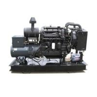
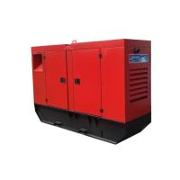
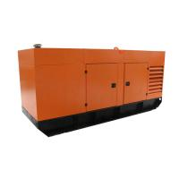
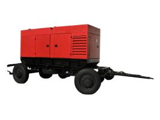
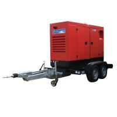

Мы даём Вам свободу и энергонезависимость!
Благодаря нашей технике Вы больше не привязаны к коммунальным источникам электроэнергии!
Дизель-генераторы
ООО «Патриот Технолоджис» является эксклюзивным представителем в Украине производителя дизель-генераторов и дизельных насосов – ООО «БМЕ-Дизель» (Минск, Республика Беларусь, производственное объединение СП ЗАО «МАЗ – МАН»).
У нас вы можете купить генераторы компании ООО «БМЕ-Дизель» в Украине, а, также, произвести ремонт генераторов этой компании и других производителей. Мы выполняем сервисные работы, техническое сопровождение и несем гарантийные обязательства на поставленное оборудование.
Наша продукция может использоваться и как генератор для дома и как источник резервного питания и, в том числе, для обеспечения работы электрооборудования в местах, куда не проложили ЛЭП.
Предлагаем Вашему вниманию следующие дизель-генераторы
Готовы предоставить более подробную техническую и коммерческую информацию по Вашему запросу в кратчайшие сроки.
Наиболее популярные модели наших генераторов есть на складе в Минске и доступны для приобретения в течении 2ух недель.
У нас вы можете купить генераторы компании ООО «БМЕ-Дизель» в Украине, а, также, произвести ремонт генераторов этой компании и других производителей. Мы выполняем сервисные работы, техническое сопровождение и несем гарантийные обязательства на поставленное оборудование.
Наша продукция может использоваться и как генератор для дома и как источник резервного питания и, в том числе, для обеспечения работы электрооборудования в местах, куда не проложили ЛЭП.
Предлагаем Вашему вниманию следующие дизель-генераторы
|  |
дизель-генераторы в открытом исполнении для установки внутри помещения номинальная мощность от 10 до 1500 кВт |

|
|  |
дизель-генераторы в кожухе для установки на улице номинальная мощность от 10 до 1500 кВт |
 |
|  |
дизель-генераторы на прицепах для обеспечения мобильности работы номинальная мощность от 10 до 1000 кВт |
 |
Готовы предоставить более подробную техническую и коммерческую информацию по Вашему запросу в кратчайшие сроки.
Наиболее популярные модели наших генераторов есть на складе в Минске и доступны для приобретения в течении 2ух недель.